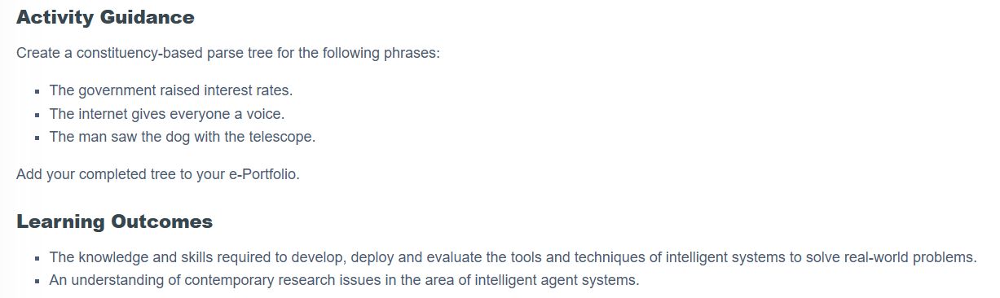

Activity Task

Parse Tree Visualisations
The government raised interest rates.
The internet gives everyone a voice.
The man saw the dog with the telescope: VP Attachment
In this interpretation, the man used the telescope to see the dog.

The man saw the dog with the telescope: NP Attachment
In this interpretation, the dog had the telescope.
Parse tree diagrams created using Mermaid Live .
Reflection
WHAT
Drawing two valid trees for “The man saw the dog with the telescope” challenged my assumption that syntax alone determines intended meaning. One reading gives the man the telescope; the other, the dog.
SO WHAT
Both parses are grammatical, so syntax cannot resolve the ambiguity alone. Interpretation depends on world knowledge, while a statistical parser may favour patterns more common in its training data.
NOW WHAT
For ambiguous constructions, I would surface competing interpretations for confirmation before they influence downstream decisions. I would judge success by whether the user’s intended meaning is preserved.